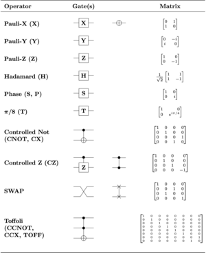
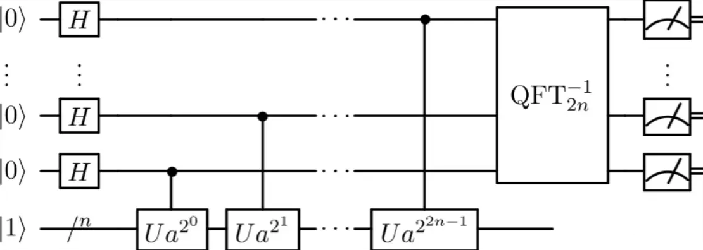

后量子学习笔记·其二
在 撬开后量子的大门 一文中，我们初步学习了后量子密码学，本篇博客，力求对后量子密码学进行进一步学习
量子计算
我们通常说的量子计算就是通过量子逻辑门来操作处于叠加态的量子。比如Hadamard门，简称H门，他的一个主要功能就是通过计算基态产生等概率的叠加态。通过H门变换后的单量子叠加态为：
$H(|Φ_1⟩)=\frac{1}{\sqrt{2}}(|0⟩+|1⟩)$
两种基态的坍塌概率都为 $\frac{1}{\sqrt{2}}$，两个量子的H门得到的结果如下：
$H(|Φ_2⟩)=\frac{1}{\sqrt{2^2}}(|00⟩+|01⟩+|10⟩+|11⟩)$
每个态坍塌的概率 $\frac{1}{\sqrt{4}}$ ，对于n个量子的H门变换后：
$H(|Φ_n⟩)=\frac{1}{\sqrt{2^n}}∑_{i=0}^{2n−1}|i⟩$
量子门及其对应的门矩阵如下图：

https://en.wikipedia.org/wiki/Quantum_logic_gate
挖个坑，这是另外一篇笔记的事情了
还有一个比较重要的复合门是受控U(a,x)门：一只冰牙喵：4.2 受控操作
省流：受控U门可以用于计算以a为基底的幂，其一般用于生成指数函数值。
量子如何做并行运算
量子计算正是有了数据的可叠加性和幺正变换，从而决定了一次操作即可改变多个数据
在经典计算中，并行性的核心思想是将一个计算任务分配给多个处理器同时运行，要快于使用一个处理器来运行。在理想的情况下，将工作分配给K个处理器就应该使计算时间缩短为原来的1/K
而对于量子计算机，将一个N 位量子寄存器中的 $2^N$ 个数据同时通过一次幺正变换（即进行一次运算）所需的时间定义为 $T_q$ ，而经典计算中对一个数据进行运算的时间为 $T_c$ ，因为一次量子计算就对所有的数据做了并行处理，所以量子计算加速能力可以表示为 $S=2^N\cdot\frac{T_c}{T_q}$
如果 $T_c=T_q$ ,那么加速能力 $S=2^N$,也就是说对量子计算机做一次运算，相当于对经典计算机做 $2^N$ 次运算
此外，一台量子计算机并不一定在所有计算任务上都比一台经典计算机做得好，比如乘法运算在一台量子计算机上执行就不如传统计算机上快。为了突出量子计算机的优越性，就需要开发量子并行效应能力的算法。
量子计算机是严重依赖于优秀的量子算法的实现，虽然通用量子计算机能做经典计算机的所有事情，但是只有在处理特定问题上量子计算才具有决定性的优势
Shor算法分析
shor算法直接将质因子分解以及离散对数问题以指数级速度提升，这意味着可以利用同样算法思想来解决更为广泛的隐含子群问题。
RSA是经典计算机大数质因式分解的指数复杂度的困难的一种非对称加密算法，目前最优的因子分解算法（The Number Field Sieve）为指数复杂度 $O\left(\exp\left(\left(\frac{64}{9}\right)^{1/3} \cdot \log n^{2/3} \cdot \log \log n^{1/3}\right)\right)$ 。而通过shor量子算法可以以多项式复杂度完成大数因式分解，从而可以快速破解RSA算法。
Shor算法的核心依赖于
- H变换
- U变换
- QFT(量子傅立叶)
Shor算法量子实现线路简图：

RSA算法
我们设RSA的公钥为 $(e,N)$ ，私钥为 $(d,N)$ ,那么生成公私钥的过程如下：
- 生成两个足够大的素数 $p,q$，得到合数 $N=pq$，则 $\phi(N)=(p-1)(q-1)$
- 生成 $e$ ，使得 $e$ 和 $L$ 互质，且满足 $1<e<\phi(N)$
- 生成 $d$，使得 $d*e=1\mod \phi(N)$ 且 $1<d<\phi(N)$
那么加密解密操作如下
只要能够实现大数N的因子分解，就可以破解RSA
2、问题转化
没看完，改天接着看
1 | https://zhuanlan.zhihu.com/p/106923175 |
首先我们需要将大数因子分解问题转化为以求待分解的合数N为模的函数 $f(x)=a^x(mod\;N)$ 的周期问题。
设周期函数 $f(x)=a^x\pmod N$ 的周期为r（这里a为小于N，且与N互质的整数），则有：f(x)=f(x+r) , 那么：
设整数 $x=a^{r/2}$ ，则
那么 $x-1$， $x+1$ 都能被 $kN$ 整除，那么一定存在 $gcd(x+1,N)>1$ 或者 $gcd(x-1,N)>1$，也就说与 $N$ 存在一个大于1的公约数，这个公约数就是N的分解因子。
例如：设 N=15，a=7 ,则：
由此，我们只要求出f(x)的周期，就能轻而易举的分解合数了。而shor算法的精髓就是利用量子特性来快速求解得到周期r.
3、通过Shor算法求周期r
设量子比特长度为 L, 则总共可以表示的 $q=2^L$ 个基态, 设N为要分解的合数，为了确保 $2^L$ 长度内有足够的周期数，我们需要满足
然后，我们利用Hadamard门来构造等概率的量子叠加态 $\mathinner{|x \rangle}$ 存入寄存器reg1，然后利用U门来构造 $\mathinner{|f(x) \rangle}$ 的叠加态存入寄存器reg2，且使这两个寄存器处于纠缠态。
两个寄存器展开形式如下：
由于 f(x) 为周期函数，设周期为r，A为总长$2^L$中存在的周期数，则
设l为小于一个周期内的x的值, $x=l+Ar$, 则整个系统的态实际为
因此，x可以表示为
然后对reg2进行计算基上的测量，设测量结果设为 Z ，测量Z在reg1中的投影变化为
例如 N=15，a=7 ，测量后的整个系统的态为：
经过投影后
这里，当测量得到一个 $\gamma$ 值后，由于寄存器reg1和寄存器reg2是处于纠缠态，所以Z值测量后寄存器reg1会塌陷为相同Z值的 $\mathinner{|x \rangle}$ 叠加态，如果reg2测量的值为1，那么reg1则处于 $(\mathinner{|0 \rangle}+\mathinner{|4 \rangle}+\mathinner{|8 \rangle}+…)$ 的叠加态，那么周期 r 的信息就包含在reg1中，因此对reg1进行量子傅里叶变化：
上式可以变换为：
这里为什么要这么变换，因为当测量Reg2时，Reg2坍塌为了r个值中的一个值，所以每一个值对应reg1中的A个叠加态。这里设：
这里，我们需要考虑两种情况，一种是 $2^L$ 能够整除 r 的情况，也就是在 $2^L$ 内刚好有整数个周期，一种是不能整除的情况。如果能够整除，那说明每个波峰刚好位于 $\gamma=k2^L/r$ ，不能整除时，波峰位于非常接近波峰的两侧，因为波峰处的 $\gamma$ 本应该为非整数，而我们测量得到 $\gamma$ 只能是整数，所以这时候我们需要加入微调的参数。接下来我们分别对这两种情况进行分析。
A.整数周期
在(2)式的[ ]中，在 \gamma 是 \frac{2^L}{r} 的整数倍情况下变成，出现相长干涉，求和后为 A=\frac{2^L}{r} ，如果不为整数，则为相消干涉，其值趋于0. 所以
C_\gamma=\begin{cases} \frac{1}{\sqrt{r}}e^{2\pi il\gamma/2^L}&\gamma=k2^L/r\ 0&\gamma\ne k2^L/r\ \end{cases}\
当 \gamma\ne k2^L/r 时，我们通过等比数列转化得到：
C_\gamma=\frac{\sqrt{r}}{2^L}e^{2\pi il\gamma/2^L}[\sum_{j=0}^{A-1}e^{2\pi ijr\gamma/2^L}]=\frac{\sqrt{r}}{2^L}e^{2\pi il\gamma/2^L}[\frac{e^{2\pi iAr\gamma/2^L}-1}{e^{2\pi ir\gamma/2^L}-1}]\
带入（0）式得：
C_\gamma=\frac{\sqrt{r}}{2^L}e^{2\pi il\gamma/2^L}[\frac{e^{2\pi i\gamma}-1}{e^{2\pi ir\gamma/2^L}-1}]\
由于 e^{2\pi i\gamma}-1=0 ，也就是说，当 \gamma\ne k2^L/r ，也即不为整数，则为相消干涉，其值为0。
通过量子傅里叶变换后得到如下叠加态
\mathinner{|\Phi_{n} \rangle}=\frac{1}{\sqrt{r}}\sum_{k=0}^{r-1}e^{2\pi ik/r}\mathinner{|\frac{k2^L}{r} \rangle}\ \rho(\mathinner{|\Phi_{n} \rangle})=|\frac{1}{\sqrt{r}}|^2=\frac{1}{r}
测量 \mathinner{|\gamma \rangle} 的值， 等概率 \frac{1}{r} 地选择出一个态。由 \gamma=\frac{k2^L}{r} 得：
\frac{\gamma}{2^L}=\frac{k}{r}\
如果有 gcd(k,r)=1\;(\rho[gcd(k,r)=1])=\frac{1}{log(r)}) , r 就可以从 \frac{\gamma}{2^L} 的不可约分数求出。
B. 非整数周期
2^L 不能整除 r 的情况下,那么在x值范围内的周期数A便不是整数，此时我们加入微调参数 \delta_k 稍作调整，使得 \gamma 为整数，设
\gamma=\gamma_k+\delta_k=k\frac{2^L}{r}+\delta_k\
因此(2)式的[ ]为：
\begin{align}\sum_{j=0}^{A-1}e^{2\pi ijr\gamma/2^L}&=\sum_{j=0}^{A-1}e^{2\pi ijr(k\frac{2^L}{r}+\delta_k)/2^L}\ &=\sum_{j=0}^{A-1}e^{2\pi ijk}\cdot e^{2\pi ijr\delta_k/2^L}\ &=\sum_{j=0}^{A-1}e^{2\pi ijr\delta_k/2^L}\&=\frac{e^{2\pi iAr\delta_k/2^L}-1}{e^{2\pi ir\delta_k/2^L}-1}\end{align}\tag{3}\
这里 \delta_k 的值极小，该值用于逼近函数的峰值，我们再令
\theta=\frac{2\pi r\delta_k}{2^L}\tag{4}
因此(3)式的平方表示为
|\frac{e^{iA\theta}-1}{e^{i\theta}-1}|^2=(\frac{cosA\theta+isinA\theta-1}{cos\theta+isin\theta-1})^2\
由于
\begin{align} cos\theta+isin\theta-1&=1-2sin^2\frac{\theta}{2}+2isin\frac{\theta-1}{2}cos\frac{\theta-1}{2}-1\ &=2sin\frac{\theta}{2}(sin\frac{\theta}{2}-icos\frac{\theta}{2})\ &=2isin\frac{\theta}{2}(cos\frac{\theta}{2}+isin\frac{\theta}{2})\ &=2isin\frac{\theta}{2}\cdot e^{\frac{i\theta}{2}} \end{align}\
因此
|\frac{e^{iA\theta}-1}{e^{i\theta}-1}|^2=|\frac{2isin\frac{A\theta}{2}\cdot e^{\frac{iA\theta}{2}}}{2isin\frac{\theta}{2}\cdot e^{\frac{i\theta}{2}}}|^2=\frac{sin^2\frac{A\theta}{2}\cdot e^{iA\theta}}{sin^2\frac{\theta}{2}\cdot e^{i\theta}}=\frac{sin^2\frac{A\theta}{2}}{sin^2\frac{\theta}{2} }\cdot e^{i(A-1)\theta/2}
所以得到 \gamma 的概率为
\rho(\mathinner{|\gamma \rangle})=(\frac{\sqrt{r}}{2^L})^2\frac{sin^2\frac{A\theta}{2}}{sin^2\frac{\theta}{2}}\ =\frac{r}{2^{2L}} \frac{sin^2\frac{A\theta}{2}}{sin^2\frac{\theta}{2} }\ =\frac{r}{2^{2L}} \frac{sin^2\pi rA\delta_k}{sin^2\pi r\delta_k }\
这里，为了严谨讨论，我们设 |\delta_k| 小于等于1/2（如果大于1/2，可以认为是下一个整数 z-(1-\delta) ），所以这是适用于所有情况的
|\delta_k|\leq\frac{1}{2}\tag{5}
由(4)(5)得：
|\theta|\leq\frac{2\pi \frac{r}{2}}{q}=\frac{\pi r}{q} \ \Rightarrow \frac{|A|}{2}|\theta|\leq\frac{\pi r}{q}\cdot \frac{A}{2}<\frac{\pi r}{q}\cdot\frac{2^L}{2r}=\frac{2^{L-1}\pi}{q}=\frac{\pi}{2}\tag{13}
当 \alpha\in[0,\frac{\pi}{2}]， sin\alpha 必位于原点与点 (\pi/2,1) 连线的上方，所以
sin(\frac{A}{2})\theta\geq\frac{2}{\pi}(\frac{A}{2})\theta\
而对于任意 \alpha ， |sin\alpha| 为凸函数，有：
|sin(\frac{A}{2})\theta|\geq|\frac{2}{\pi}(\frac{A}{2})\theta|\
又因 sin\frac{\theta}{2}\leq\frac{\theta}{2} ,因此：
\frac{sin^2(\frac{A}{2}\theta)}{sin^2(\frac{\theta}{2})} \geq\frac{(\frac{2}{\pi}(\frac{A}{2}\theta))^2}{sin^2(\frac{\theta}{2})}\geq\frac{(\frac{2}{\pi}\frac{A}{2}\theta)^2}{(\frac{\theta}{2})^2}\ =\frac{\frac{2}{\pi}(\theta)^2}{(\frac{\theta}{2})^2}\cdot(\frac{A}{2})^2 =\frac{16}{\pi^2}\cdot(\frac{A}{2})^2
所以，测量 \mathinner{|\gamma \rangle} 的概率为
\rho(\mathinner{|\gamma \rangle})=|C_\gamma|^2\geq\frac{r}{2^{2L}}\cdot\frac{16}{\pi^2}(\frac{2^L}{2r})^2=\frac{4}{\pi^2r}\
最后，我们来讨论测量值 \gamma ,有
\gamma r=(k\frac{2^L}{r}+\delta_k)\cdot r\ =k2^L+\delta_kr\ \Rightarrow |\gamma r-k2^L|=|\delta r|\leq\frac{r}{2}\
所以
|\frac{\gamma}{2^L}-\frac{k}{r}|\leq\frac{r}{2}\cdot\frac{1}{2^Lr}=\frac{1}{2^{L+1}}\
这里 \gamma 已测得，这里严格存在一个分数 \frac{k}{r} ,可由 \frac{\gamma}{2^L} 的连分数展开求出（下一个节将通过实例说明），通过约分满足 gcd(k,r)=1 就可得到 r 的值，gcd算法的成功率为
\rho(gcd(k,r))>\frac{1}{logr}\ \Rightarrow Prob[N]=Prob(gcd(k,r))\cdot Prob(\gamma)>\frac{1}{logr}\cdot\frac{4}{\pi^2r}=\frac{4}{\pi^2rlogr}
也就是说我们能以大于 \frac{4}{\pi^2rlogr} 的概率分解N的因子再加上量子傅里叶变换的复杂度为 O(n^2) ,所以shor算法的时间复杂度为 O(n^2rlogr)
三、实例分析
虽然上面已经分析得很透彻了，但是估计还是有人觉得会太抽象，所以下面我以一个例子来进行实例分析，以帮助理解。
对于 f(x)=a^x(mod N) ，N=91，a=4，那么
f(1)=4,f(2)=16,f(3)=64,f(4)=74,f(5)=23,f(6)=1
所以周期为 r=6， N<2^7 ,L=2\times 7=14，然后根据2，3式我们计算得到：
\begin{array}{c|c} k &\gamma=k2^L/r&最近整数&\rho(\gamma)&\gamma/2^L\ \hline 0&0&0&0.167&0\ \hline 1&2730.67&2731&0.114&0.166687\ \hline 2&5461.33&5461&0.114&0.333312\ \hline 3&8192&8192&0.167&0.500000\ \hline 4&10922.67&10923&0.114&0.666687\ \hline 5&13653.33&13653&0.114&0.833312\ \end{array}\
这里， \gamma 是我们测量得到值，如果这个值为0，那么对于我们求周期r是没有意义的，所以除开这种情况下，测得其他值的概率和为0.623。如果测量的值为13653，那么我们来计算0.833312的连分数。
1/0.833312=1.200031,
1/0.200031=4.999225,
1/0.999225=1.000775,
1/0.000775=1290.322580
这里遇到大数1290，我们就终止，最后我们得到连分数为
[0;1,4,1]=\frac{1}{1+\frac{1}{4+1}}=\frac{5}{6}\
那么我们就可以确定 k=5,r=6 了吗，那有没可能 k=10,r=12 呢，所以，我们不能单纯的通过一次测量来确定周期，我们来考察其他几项，我这里不再一一去展开了，懒人可以在这里去计算(连分数计算 -连分数计算器-分数计算器)。
\begin{array}{c|c} k &\gamma最近整数&\gamma最近整数/2^L&连分数展开近似值\ \hline 0&0&0&0\ \hline 1&2731&0.166687&\frac{1}{6}\ \hline 2&5461&0.333312&\frac{1}{3}\ \hline 3&8192&0.500000&\frac{1}{2}\ \hline 4&10923&0.666687&\frac{2}{3}\ \hline 5&13653&0.833312&\frac{5}{6}\ \end{array}\
因此，如果我们将shor算法多执行几次，最后求出各个分母的最小公倍数，那么这个最小公倍数就是我们要找的周期r，有了周期r，我们就不难求出合数N的质数因子了，进而也能够比较容易破解RSA算法了。
四、离散对数问题简析（不感兴趣可以略过，有时间补充）
通过对shor算法原理的剖析，我们可以知道，对于任何具备转化为求周期函数的周期为目标的问题都可以用同样算法以指数加速来快速解决，比如离散对数(ElGamal), ECC之类的非对称加密算法都可以用同样的思想来解决。
离散对数多说两句，Shor在其原始论文中对于素域上的离散对数问题，给出了一个基于整数求阶量子计算算法求解算法,成功率为1/480。Shor指出在解决素域上的离散对数问题时，其实并没有利用到素域的特性，因而对有限域上的离散对数问题也同样成立。后来Eicher和Opku给出了一个在多 项式时间内以1/480的成功率攻击椭圆曲线离散对数问题的量子计算算法
设一个阶为 p ,且生成器 为g 的群 G （ g\in G ）,如果 x=g^r(mod\; p)\in G ,那么对于部分 r\in \mathbb{Z}_p ,我们希望得到 r ,那么 r 就是离散对数 r=log_g(x) .
比如EIGamal加密，对于随机大大素数P,以及随机数x,满足y=g^x(mod\;P)\;1<x<P-1,g\in Z^*_P\
这里 (y,g,P) 为公钥， x 为私钥。我们将长度为 N，N<log^P_2 的消息分组为
m_1m_2…m_t\
那么计算密文
\begin{cases} c_i=g^{r_i}(mod \;P)& \c^{‘}_i=m_iy^{r_i}(mod \;P)&\ \end{cases}1\leq i\leq t\
这里c1,c2为加密后的密文,那么解密过程如下：
m_i=\frac{c^{‘}_i}{c^x_i}(mod\;P)\;1\leq i\leq t\
简单推一下
\frac{c^{‘}_i}{c^x_i}=\frac{m_iy^{r_i}}{g^{xr_i}}=\frac{m_ig^{xr_i}}{g^{xr_i}}=m_i(m_i<P)\
考虑abelian 群 \mathbb{Z}_p \times\mathbb{Z}_p (每一个因子对应于值的模加)。那么函数
f:\mathbb{Z}_p \times\mathbb{Z}_p\rightarrow G; f(a,b)=g^ax^{b}
这给我们呈现了一个abelian 隐含子群问题，同时可以看出映射 f 是一个群同态。kernel为 (r,1) 的倍数，所以如果我们能找到kernel，我们就能够找 r .
对于函数 f(a,b)=g^ax^b(mod\;p) ,设周期为 r_g 和 r_x ，那么
g^ax^b=g^{a+r_g}x^{b+r_x}=g^ax^b\cdot g^{r_g}x^{r_x}\ \Rightarrow g^{r_g}x^{r_x}=1(mod\;p)\ \Rightarrow g^{r_g}g^{rr_x}=g^{r_g+rr_x}=1(mod \;p)\
r_g+rr_x=0(mod\;q)\ r=-\frac{r_g}{r_x}\
因此，我们只要通过量子算法求得周期 r_g,r_x 就可以得到 r .使用量子算法处理离散子群问题，和我们前面讲解的方法非常类似，后续有时间再分析吧。
.gif)
.gif)
.gif)
.gif)
.gif)
.gif)
.gif)
.gif)
.gif)
.gif)
.gif)